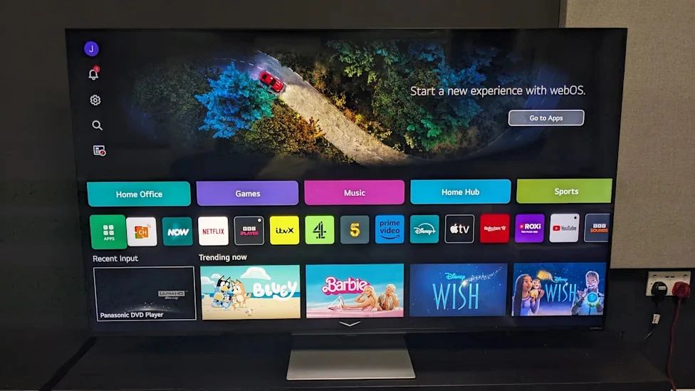
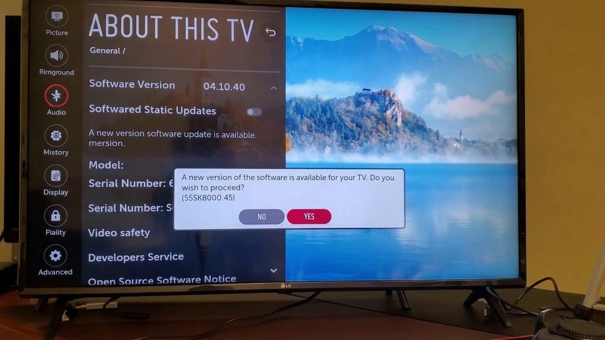
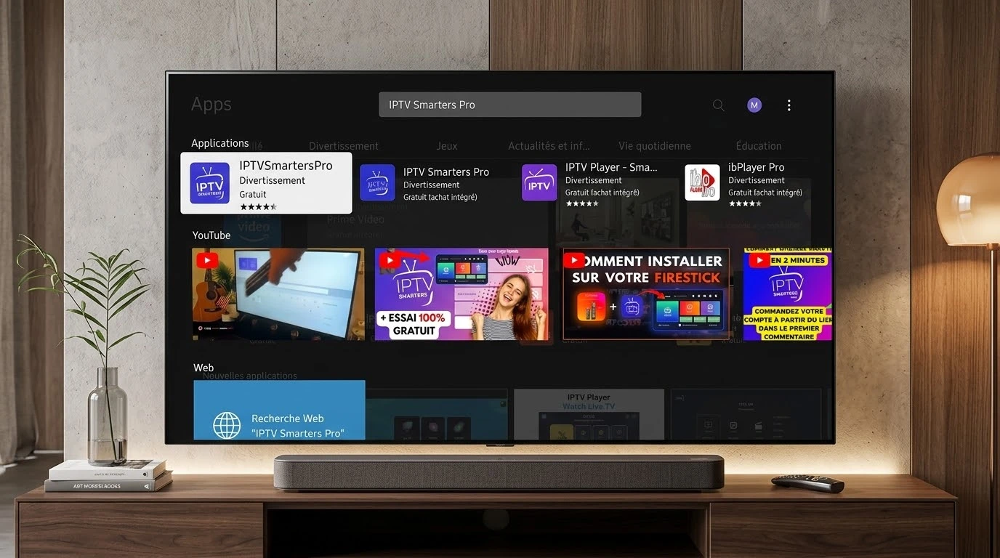
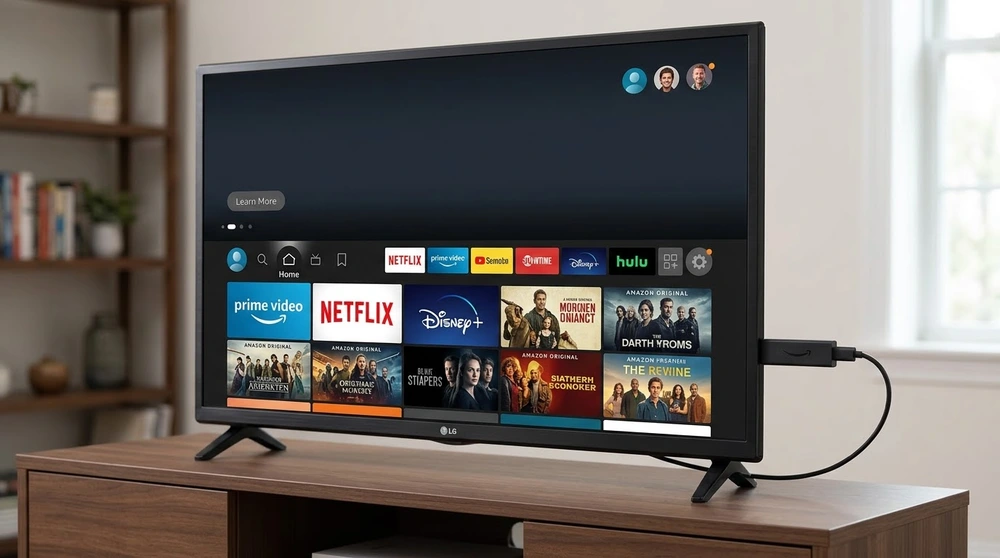

How to Install IPTV on LG Smart TV

LG Smart TVs use the webOS platform and the LG Content Store. Several IPTV-capable players are offered there, although the list varies by country and TV generation. These steps cover the usual process.
Prepare the TV
Connect to your network, then open Settings, All Settings, General, About This TV to check your webOS version. Install any available update.

Install the app
- Press the Home button on the remote.
- Open the LG Content Store.
- Search for the IPTV player you want.
- Select Install and wait for it to finish.
- Launch the app from your home bar.
Load your source
Enter your playlist URL or login details with the on-screen keyboard. Typing long links is slow, so consider using the player's web or mobile companion if it offers one. Background reading: what an M3U playlist is.

Alternatives
If the store does not list a suitable player, connect a streaming stick or Android TV box. See the Android TV guide for that route.

Tips
- Use Ethernet where possible.
- Turn off energy-saving modes that dim or pause apps.
- Reinstall the app if it crashes repeatedly.
If playback stutters, work through the buffering checklist.
Frequently asked questions
Which LG TVs are supported?
Support depends on the webOS version and your region. Check the Content Store on your own TV.
Can I use IPTV Smarters on LG?
A version may be available in some regions. Search the store; if not listed, use an external device.
Why does the app close by itself?
Low memory or an outdated TV software version are common causes. Update and restart the TV.